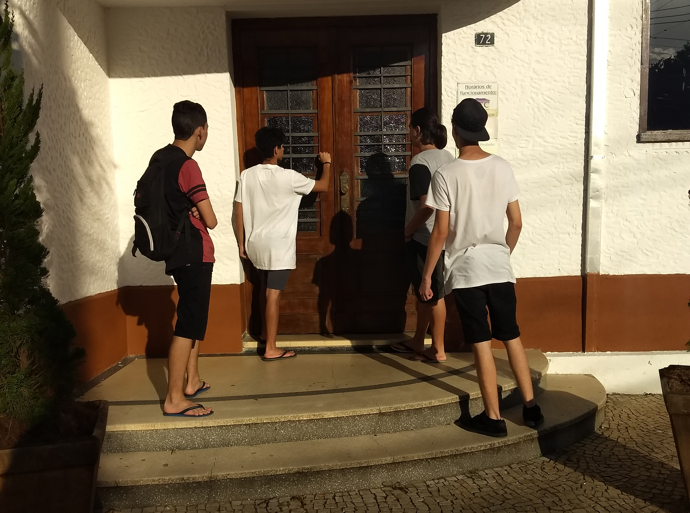

Nós somos um grupo de estudantes do primeiro módulo do curso de Informática para internet no IFSP que receberam um tema sobre construções e ruínas do Litoral Norte para relatar. O grupo é composto por João Vitor, Juliano Paulo, Pedro Victor e Yuri Santos.
No dia 31 de maio de 2018 o grupo se reuniu para capturar as fotos da cidade de Caraguatatuba, nos seguintes locais: Museu histórico de caraguatatuba, Praça do Coreto, Igreja Matriz e Monumento em homenagem ao caiçara no Camaroeiro. Foram tiradas fotos das construções antigas e significantes para a cidade, que no caso são os monumentos e algumas estátuas.
No dia 2 de junho de 2018 Juliano Paulo viajou à Ubatuba para capturar as fotos para a página da cidade.
No dia 16 de junho foram tiradas fotos dos locais escolhidos em São Sebastião.
Dia 17 de junho o grupo fez uma viagem de campo a Ilhabela para tirar fotos dos locais escolhidos para serem colocados no site.
Lindos no coreto

Lindos saindo do coreto
Batendo à porta da história

Aproveitando o jardim do Éden
Aquele monumento do sesquicentenário